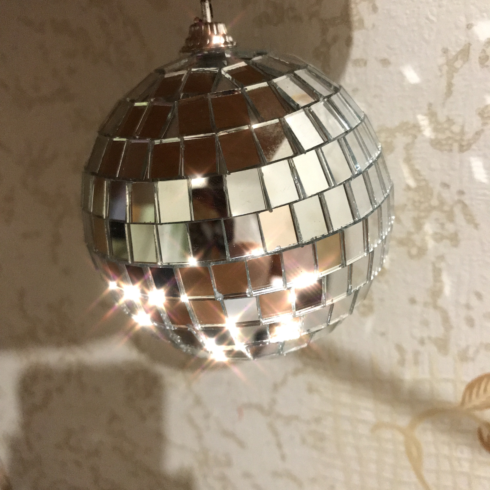
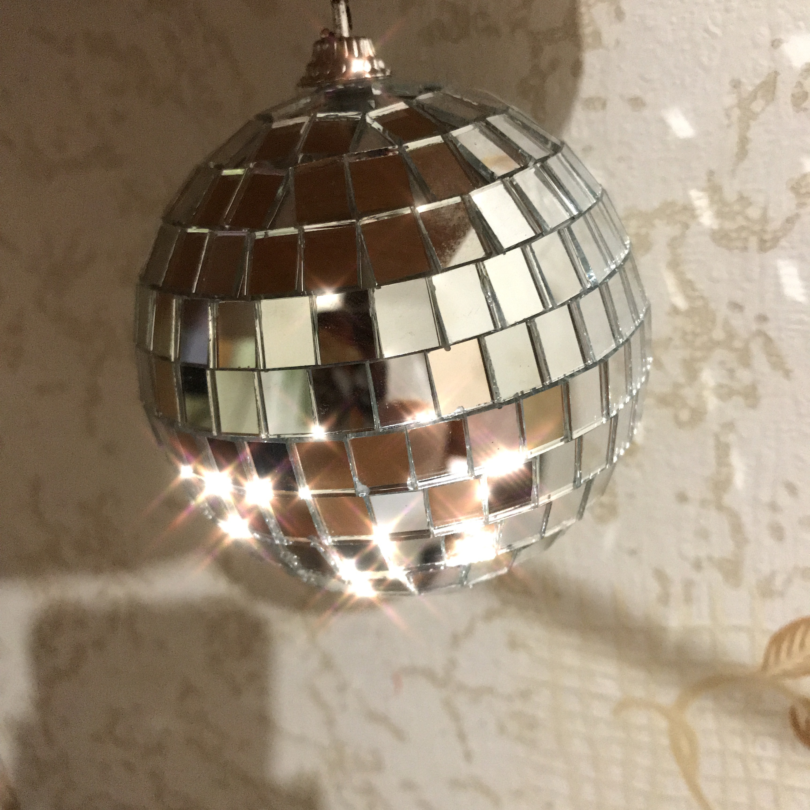

berrymooor
Good day!

Does anyone have a source code or a link to how to do this kind of sparkly “starshine” post effect shader?


Good day!
Does anyone have a source code or a link to how to do this kind of sparkly “starshine” post effect shader?


For a cheap implementation, you can use some reflection material for the glasses and put billboard which represented as the sparcle. By adding some bloom post effect, you can get some sort of the the effect on the picture.

You could also try writing a modified bloom shader that would blur the horizontal and vertical components separately in two images, rather than blurring both horizontally and vertically in one image. That would probably let you get + shaped sparkles if you didn’t want to use billboards. Aside from the
COMBINE
stage, I think you could actually do it with the existing shader just by modifying the render path.